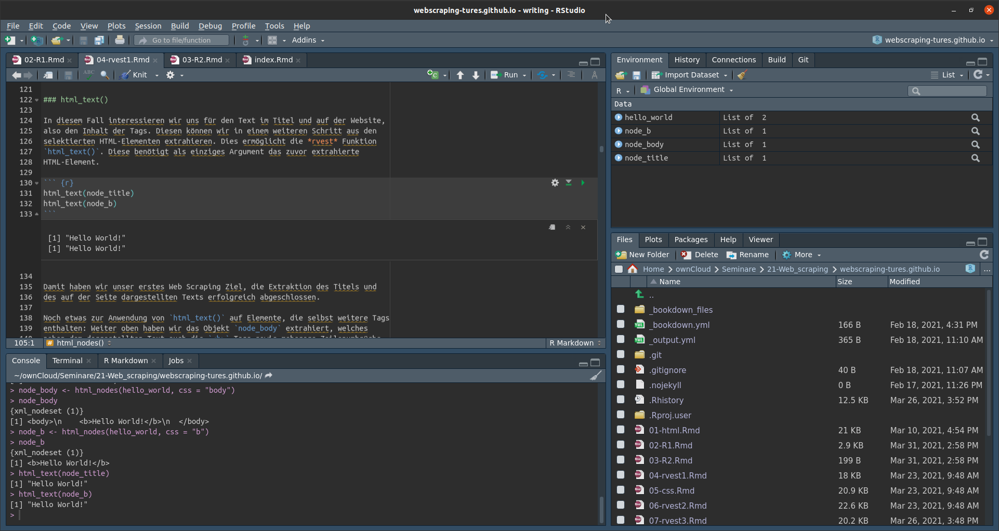

1 R Basics
1.1 Installation
In diesem Kurs werden wir mit der Sprache R in Kombination mit der IDE RStudio arbeiten. Bevor wir mit der Einführung in die grundlegende Bedienung beginnen, zunächst einige Worte zur Installation der kostenlos zugänglichen Software.
1.1.1 R
R ist eine Programmiersprache die vor allem für statistische Analysen und data science angewandt wird. Generelle Informationen zu R und die ausführliche Dokumentation, finden sie unter: https://www.r-project.org/.
Die aktuelleste Version von R für alle gängigen Betriebssysteme finden sich stets im CRAN, dem Comprehensive R Archive Network unter: https://cran.r-project.org/. Die Links zu den Installationsdateien finden sich im oberen Bereich der website. Falls Sie Windows nutzen, wählen Sie bitte die “base” Version. Im Falle von macOS, hängt die Wahl des Installers von der Version Ihres Betriebssystems ab. In beiden Fällen führen Sie bitte die Datei aus und Installieren Sie R in ein Verzeichnis Ihrer Wahl. Für Linux Systeme stellt CRAN Installationsanweisungen für einige der populäreren Distribution bereit.
Die Code Beispiele auf dieser Website wurden mit der R Version 4.1.1 “Kick Things” erstellt und getestet.
1.1.2 RStudio
R kann nun bereits ausgeführt werden, erlaubt aber nur die Nutzung einer einfachen Konsole. Um die Arbeit mit R angenehmer zu gestalten, empfiehlt sich dringend die zusätzliche Installation eines IDE – Integrated Development Environment – also einer graphischen Benutzeroberfläche. Das populärste IDE ist RStudio, zu finden unter: https://www.rstudio.com/. Unter “Download” wählen Sie bitte die kostenlose Version von “RStudio Desktop” und den passenden installer für Ihr Betriebssystem.
Installieren Sie bitte zuerst R und erst danach RStudio. Starten brauchen Sie dann in Zukunft nur noch RStudio.
1.2 Erste Schritte
1.2.1 Übersicht RStudio

Das RStudio interface besteht aus vier Unterbereichen. Links-unten finden Sie die “Console” sowie weitere Tabs, die Sie zu Beginn selten bis nie brauchen werden. Die console kann genutzt werden um R code einzugeben und auszuführen, mehr dazu in Kürze. Links-oben werden geöffnete R scripts angezeigt. Aktuell haben Sie noch kein script geöffnet, ab Kapitel 2 wird dort aber der überwiegende Teil unserer Arbeit stattfinden. Rechts-oben finden sich mehrere Tabs, von denen für uns vor allem das “Environment” Tab von Interesse ist. Hier werden alle Objekte gelistet die Sie in ihrem code erstellen. Auch hierzu in Kürze mehr. Rechts-unten finden Sie erneute eine Anzahl Tabs. “Files” zeigt uns die Dateistruktur unseres Rechners, “Plots” den graphischen output (siehe Kapitel 3) und “Help” die Hilfedateien zu Funktionen und packages (mehr in Kapitel 2).
1.2.2 Hello World!
Nun können wir endlich damit beginnen unseren ersten R Befehl auszuführen. In
diesem Kapitel, werden wir Kommandos noch ausschließlich in der console
schreiben. In der untersten Zeile der console sehen Sie ein > Symbol. Hinter
dieser Eingabeaufforderung können wir unsere Befehle schreiben und mit “Enter”
ausführen. Versuchen Sie des mit folgender Zeile:
print("Hello World!")
## [1] "Hello World!"Sie haben gerade ihren ersten R Befehl ausgeführt, Ihren ersten output erhalten
und gleichzeitig auch Ihre erste Funktion genutzt. Mehr zu Funktionen folgt in
Kapitel 2), fürs Erste genügt es aber zu wissen, dass print() alles
was von den Klammern, und im Fall von Text von den Anführungszeichen innerhalb
der Klammern, umfasst ist als output druckt. Der output selbst beginnt mit
[1], was anzeigt, dass dies das erste und hier das Einzige Element des outputs
ist.
Bitte beachten Sie, dass R die auf dieser website vor dem output dargestellten
## nicht abdruckt.
1.2.3 Rechnen mit R
R versteht die bekannten arithmethischen Operatoren + - * /. Sie können R also
auch als übergroßen Taschenrechner nutzen. Für fortgeschrittenere
Rechenoperationen steht eine Vielzahl von Funktionen zur Verfügung.
Beispielsweise gibt Ihnen sqrt() die Quadratwurzel der von den Klammern
umfassten Zahl als output zurück. Oben mussten wir den Text "Hello World!" in
Anführungszeichen einfassen. Zahlen müssen hingegen ohne Anführungszeichen
geschrieben werden. Potenzen bekommen wir mit der Notation x^y. Im folgenden
code block finden Sie einige Beispiele, die Sie Zeile für Zeile in die console
tippen und mit “Enter” ausführen können:
17 + 25
## [1] 42
99 - 57
## [1] 42
4 * 10.5
## [1] 42
84 / 2
## [1] 42
sqrt(1764)
## [1] 42
6.480741 ^ 2
## [1] 421.2.4 Vergleichsoperatoren
Vergleichsoperatoren können genutzt werden um zwei Werte miteinander zu
vergleichen und das Ergebnis als TRUE oder FALSE im putput zu erhalten. Um
zu überprüfen ob zwei Werte gleich sind, schreiben wir ==. Dabei ist zu
beachten, dass ein Vergleich zweier Werte stets zwei Gleichheitszeichen
voraussetzt. = hat eine andere Bedeutung! Um zu testen ob zwei Werte nicht
gleich sind, können wir != nutzen, wobei das ! geneerell für nicht steht.
42 == 42
## [1] TRUE
42 != 42
## [1] FALSEWeitere mögliche Vergleiche sind kleiner <, kleiner gleich <=, größer
> und größer gleich >=.
10 < 42
## [1] TRUE
42 <= 42
## [1] TRUE
10 > 42
## [1] FALSE
90 >= 42
## [1] TRUE1.3 Objekte
In R können wir Daten und Ergebnisse unserer Analysen in Objekten speichern. So
bleiben diese im Arbeitsspeicher erhalten und können später erneut aufgerufen
und weiterverwendet werden. Ein Objekt ist dabei ein frei gewählter Name dem wir
Daten zuweisen. Namen müssen dabei mit einem Buchstaben beginnen und sollten nur
weitere Buchstaben, Ziffern sowie die Sonderzeichen _ und . beinhalten.
Verbreitete Konventionen für längere Objektnamen sind snake case
– the_answer – und camel case – theAnswer. Dies ist letztlich
Geschmackssache, es empfielt sich aber eine einheitliche Schreibweise zu
verwenden sowie kurze aber klare Namen zu verwenden. Daten weisen wir einem
Objekt mit dem assignment operator <-zu.
the_answer <- 42Um sich Fingerakrobatik zu ersparen, ist es sinnvoll sich frühzeitig die
Tastenkombination “Alt” + “-” anzugewöhnen, die <- an der aktuellen cursor
Position einfügt.
Die so in einem Objekt gespeicherten Daten, können wir aufrufen, indem wir den Objektnamen als Befehl schreiben.
the_answer
## [1] 42Wir können Werte in Objekten auch direkt in Berechnungen oder in Funktionen verwenden. Beachten Sie dabei, dass die Daten eines Objekts überschrieben werden, wenn wir diesem neue Daten zuweisen.
the_answer <- the_answer / 2
the_answer
## [1] 21
a <- 17
b <- 4
the_answer <- (a + b) * 2
the_answer
## [1] 42So erstelle Objekte werden in dem “Environment” Tab (rechts-oben) gelistet.
Möchten wir erstellte Objekte entfernen, können wir dazu die rm() Funktion
nutzen. Dies ist zwar in der Regel nicht notwendig, kann aber hilfreich sein um
versehentlich oder nut zum Test erstellte Objekte zu löschen und so den Tab
etwas aufzuräumen.
rm(the_answer)1.4 Vektoren
Als wir weiter oben eine Zahl einem Objekt zugewiesen haben, haben wir ohne es
zu wissen bereits unseren ersten Vektor erstellt. Vektoren sind eindimensionale
Datenstrukturen die mehrere Elemente enthalten können. Die Länge eines Vektors
bestimmt sich dabei anhand der Anzahl seiner Elemente. So erstellt auch
the_answer <- 42 einen Vektor, jedoch einen Vektor der Länge 1.
Möchten wir einen Vektor mit mehreren Elementen erstellen, nutzen wir dazu die
Funktion c(), wobei “c” für “combine” steht. So werden alle durch Kommas
getrennten Werte innerhalb der Klammern zu einem Vektor kombiniert.
v <- c(7, 8, 9, 10)
v
## [1] 7 8 9 101.4.1 Subsetting
Möchten wir bestimme Elemente eines Vektors abrufen, nutzen wir subsetting.
Dazu schreiben wir die Position des gewünschten Elements innerhalb des Vektors
als Zahl in [] direkt nach dem Objektnamen. Um beispielsweise das erste oder
das dritte Element unseres Vektors abzurufen:
v[1]
## [1] 7
v[3]
## [1] 9Mehrere Elemente gleichzeitig rufen wir ab indem wir mehrere Positionen mit
c() kombinieren oder wir definieren mit : eine Spannweite von Positionen.
v[c(1, 3)]
## [1] 7 9
v[2:4]
## [1] 8 9 101.4.2 Typen von Vektoren
Betrachten wir den Vektor v im environment, fällt auf, dass RStudio
num [1:4] vor den gespeicherten Werten abduckt. Dies drückt zum einen aus,
dass der Vektor die Länge 4 hat, zum anderen den Typ des Vektors. Hier handelt
es sich um einen numerischen Vektor – numeric, ausgedrücht durch “num” –
also einen Vektor der Zahlen enthält.
Um Imformationen zu Typ, Länge und Inhalt von Objekten zu erhalten können wir
auch die Funktion str()– structure – nutzen. Dies ist vor allem bei
komplexeren Objekten wie Listen oder data frames (mehr dazu später) hilfreich um
einen ersten Überblick zu erhalten ohne das komplette Objekt abzudrucken.
str(v)
## num [1:4] 7 8 9 10R kennt noch weitere Typen von Vektoren, wobei für uns vor allem die Typen logical und character von Bedeutung sind.
Logical Vektoren können nur die Werte TRUE und FALSE enthalten. Diese
entstehen beispielsweise wenn wir Vergleichsoperatoren für einen Test nutzen.
x <- c(1, 7, 3, 5)
x >= 5
## [1] FALSE TRUE FALSE TRUEWir können logische Vektoren aber auch selbst erstellen.
z <- c(TRUE, FALSE, TRUE)
z
## [1] TRUE FALSE TRUECharacter Vektoren beinhalten Zeichenfolgen, sogenannte strings. Strings müssen stets von Anführungszeichen umschlossen sein.
char_v <- c("This", "is", "a", "character", "vector!")Auch character Vektoren können miteinander verglichen werden.
"same" == "same"
## [1] TRUE
"same" == "not the same"
## [1] FALSE
"same" != "not the same"
## [1] TRUEDa wir mit character Vektoren natürlich nicht rechnen können, kann es zu Problemen kommen wenn wir Zahlenwerte, beispielsweise als strings aus einem Text ausgelesen, als character Vektor gespeichert haben.
a <- c(1, 2, 3)
b <- c("7", "8", "9")
str(a)
## num [1:3] 1 2 3
str(b)
## chr [1:3] "7" "8" "9"
a + b
## Error in a + b: non-numeric argument to binary operatorWir können R aber anweisen einen character Vektor in einen numerischen Vektor umzuwandeln.
a + as.numeric(b)
## [1] 8 10 12Alle Typen von Vektoren können neben ihren nativen Inhalten auch NA enthalten,
die Repräsentation von fehlenden Werten in R.
c <- c(1, 2, NA, 4)
c
## [1] 1 2 NA 41.5 Weitere Datentypen
1.5.1 Data frames
Data frames sind zweidimensionale Datenobjekte aus Spalten und Zeilen, also das
was wir uns im Allgemeinen unter einer Tabelle vorstellen. Spalten enthalten
benannte Variablen, Zeilen enthalten Beobachtungen. Um einen data frame zu
erstellen nutzen wir die Funktion data.frame() und definieren innerhalb der
Klammern benannte Spalten und ihre Inhalte, getrennt durch Kommas.
df <- data.frame(Name = c("Peter", "Mary"), Alter = c(42, 24), Weiblich = c(FALSE, TRUE))
df
## Name Alter Weiblich
## 1 Peter 42 FALSE
## 2 Mary 24 TRUER erkennt dabei automatisch, welche Datentypen die Spalten enthalten.
str(df)
## 'data.frame': 2 obs. of 3 variables:
## $ Name : chr "Peter" "Mary"
## $ Alter : num 42 24
## $ Weiblich: logi FALSE TRUEWir können data frames auch zuvor definierten Vektoren zusammensetzen.
name <- c("Peter", "Mary")
age <- c(42, 24)
female <- c(FALSE, TRUE)
df_2 <- data.frame(Name = name, Alter = age, Weiblich = female)
df_2
## Name Alter Weiblich
## 1 Peter 42 FALSE
## 2 Mary 24 TRUEDa data frames zweidimensional sind, müssen wir beim subsetting auch eine
Position für die Zeilen und Spalten angeben. Diese werden ebenfalls in [] nach
dem Objektnamen eingefasst und sind durch ein Komma getrennt. Vor dem Komma
steht die Position der Zeilen, nach dem Komma die Position der Spalten. Für
Spalten können wir statt der Position auch den Namen der Spalte nutzen.
df[1, 2]
## [1] 42
df[1, "Alter"]
## [1] 42Extrahieren wir mehrere Zeilenelemente gleichzeitig, bekommen wir einen neuen data frame zurück. Um eine ganze Zeile zu extrahieren, können wir den Wert der Spaltenposition auch freilassen. Gleiches gilt für ganze Spalten, wobei wir beim subsetting einer einzelnen Spalte einen Vektor als output bekommen, bei mehreren erneut einen data frame.
df[1, 2:3]
## Alter Weiblich
## 1 42 FALSE
df[1, ]
## Name Alter Weiblich
## 1 Peter 42 FALSE
df[, "Alter"]
## [1] 42 24
df[, c("Alter", "Weiblich")]
## Alter Weiblich
## 1 42 FALSE
## 2 24 TRUE1.5.2 Listen
Vektoren und Spalten von data frames können immer nur Daten eines Typs
enthalten. Mischen wir Datentypen, werden diese auf den kleinsten gemeinsamen
Nenner gebracht. Logische Werte können auch numerisch abgebildet werden, da
TRUE dem Wert 1 entspricht, FALSE dem Wert 0. In letzter Instanz können alle
Datentypen als character Vektoren gespeichert werden.
log_vector <- c(24, TRUE)
str(log_vector)
## num [1:2] 24 1
char_vector <- c("Mary", 24, TRUE)
str(char_vector)
## chr [1:3] "Mary" "24" "TRUE"Möchten wir Datentypen mischen, können wir stattdessen Listen nutzen, welche unterschiedliche Datentypen enthalten können.
l <-list("Mary", 24, TRUE)
str(l)
## List of 3
## $ : chr "Mary"
## $ : num 24
## $ : logi TRUEUm Listen wieder aufzulösen, nutzen wir unlist().
unlist(l)
## [1] "Mary" "24" "TRUE"Listen können sogar andere Listen enthalten und sind so das flexibelste Datenobjekt das R bereitstellt.
Beim subsetting von Listen ist darauf zu achten, dass [] immer auch eine Liste
zurückgibt, selbst wenn diese nur noch ein Element enthält. Direkten Zugang zu
Elementen erhalten wir mit [[]].
str(l[1])
## List of 1
## $ : chr "Mary"
str(l[[1]])
## chr "Mary"1.6 R packages
Die R Welt ist offen und kollaborativ. Neben den base R packages die in der Grundinstallation bereits enthalten waren, steht eine stetig steigende Zahl von nutzergeschriebenen packages zum Download zur Verfügung. Diese packages haben stets einen thematischen Fokus – beispielsweise Datenbereinigung, graphische Analyse oder Textanalyse – und enthalten eine Reihe von Funktionen die den Einsatzbereich von R über das hinaus erweitern was von den Originalentwicklern geplant war oder die etwas zu kompliziert gestaltete base R Ansätze durch neue anwenderfreundlichere Funktionen ersetzen.
Packages, ihre Dokumentation und weitere Informationen werden auf CRAN – “Comprehensive R Archive Network” – gehostet. Hier haben Sie auch bereits die Installationsdateien für R heruntergeladen. Wenn Sie gleich ein package direkt aus RStudio installieren, greift die software auf CRAN zu um die erforderlichen Dateien herunterzuladen.
1.6.1 Installieren und Laden
Packages installieren wir mit der R Funktion install.packages(), mit dem Namen
des packages in "" zwischen den Klammern der Funktion. Wir werden im Verlaufe
des Seminars eine Reihe von packages nutzen, darunter das tidyverse. Zur
Installation des core tidyverse packages schreiben wir in der console:
install.packages("tidyverse")R wird während der Installation eine lange Reihe von Informationen ausgeben, von
denen uns solange alles gut geht nur das DONE (tidyverse) interessieren muss.
Nach erfolgreicher Installation, können wir das Paket laden. Dies sollte
normalerweise in den ersten Zeilen eines scripts passieren. So werden alle
notwendigen packages zu Beginn eines scripts geladen und andere Nutzer*innen
sehen sofort welche packages eventuell noch nachinstalliert werden müssen.
Ein package laden wir mit library() mit dem Namen des packages innerhalb der
Klammern, hier ausnahmsweise ohne "".
library(tidyverse)Manche Pakete, wie das tidyverse, geben uns auch beim Laden eine Reihe von Informationen die wir im weiteren Verlauf des Kapitels noch genauer betrachten werden. Andere Pakete laden aber auch still, ohne Informationen in die console zu schreiben. Sollte beim laden eines packages ein Problem auftauchen, wird R dies rückmelden.
1.7 Funktionen
Bis zu diesem Punkt haben wir bereits eine Reihe von Funktionen genutzt, ohne eigentlich zu Wissen, was Funktionen sind. Die in base R und den diversen packages enthaltenen Funktionen bieten einen einfachen Zugang zu komplexeren im Hintergrund ablaufenden Operationen. Statt beispielsweise eine komplizierte Datenanalysetechnik selbst zu implementieren, also jeden Rechenschritt Zeile für Zeile selbst zu schreiben, instalieren wir ein package mit einer passenden Funktion und sparen eventuell mehrere hundert Zeilen code ein. Außerdem sind die Rechnoperationen in den packages meist sehr viel effizienter geschrieben als wir ohne erweiterte Programmierkenntnisse dazu in der Lage wären.
Um eine Funktion aufzurufen – im Englischen “to call a function” – schreiben
wir dessen Namen gefolgt von öffnenden und schließenden Klammern. Innerhalb der
Klammern geben wir ein oder mehrere Argumente an die Funktion weiter. In vielen
Fällen, wird als erstes oder eniziges Argument ein Datenobjekt – oder rohe
Daten – angegeben, auf das die Funktion angewandt werden soll. So “druckt”
beispielsweise die base R Funktion print() die angegebenen Daten in die
console, wie bereits bei print("Hello World!") gesehen.
Weitere Beispiele für Funktionen sind einige der in base R enthaltenen Methoden statistischen Maßzahlen zu berechnen. Legen wir zunächst einen numerischen Vektor mit einigen Beispieldaten an:
data <- c(4, 8, 15, 16, 23, 42)Unsere Interesse sei es das arithmetische Mittel, den Median sowie die
Standardabweichung der Daten zu berechnen. Dazu können wir die Funktionen
mean(), median() und sd() aus base R nutzen. Allen drei Funktionen geben
wir als einziges Argument die zuvor in einem Objekt gespeicherten Daten weiter.
Weitere Argumente sind zwar möglich, für dieses Beispiel aber nicht notwendig.
mean(data)
## [1] 18
median(data)
## [1] 15.5
sd(data)
## [1] 13.49074Funktionen erlauben häufig mehrere Argumente von denen einige optional sein können und es beispielsweise ermöglichen bestimmte Optionen einer Funktion zu verändern. Dies wird uns im weiteren Verlauf regelmäßig begegenen.
1.7.1 namesspaces
Betrachten wir nochmals den output nach dem Laden von tidyverse weiter oben.
R gibt uns neben den Namen und Versionen der geladenen packages – das core
tidyverse package welches wir geladen haben ist eigentlich eine Sammlung von
packages – auch die Information über zwei Konflikte aus. Konflikte
entstehen, wenn zwei geladene packages Funktionen mit den selben Namen
enthalten. Die Funktion aus dem später geladenen package überschreibt dabei die
zuvor geladene Funktion. Hier überschreibt das tidyverse package dplyrdie
Funktionen filter() und lag() aus dem base R package stats. Ohne
dplyr bzw. tidyverse zu laden wäre beim aufruf von filter() die
Funktion aus dem stats package genutzt worden. Nun wird die gleichnamige
Funktion aus dplyr angewandt.
Möchten wir zwar dplyr laden, aber die Funktion filter() aus stats
nutzen, können wir den namespace der Funktion explizit angeben. Der namespace
gibt R an, in welchem package es nach der Funktion suchen soll. Geben wir nur
den Funktionsnamen an, sucht R in den Funktionen die aktuell geladen sind. Da
filter() aus dplyr die Funktion aus stats überschrieben hat, würde
erstere angewandt. Deklarieren wir den namespace, können wir R genau angeben in
welchem geladenen oder ungeladenen package die Funktion zu finden ist. Dazu
nutzen wir die Notation namespace::function. Um also filter() aus stats
zu nutzen, schreiben wir: stats::filter().